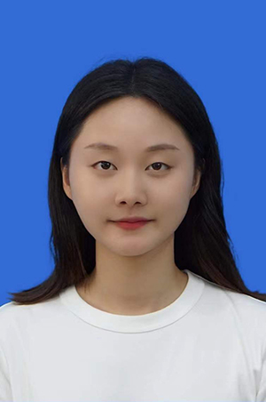

|
DataAnalyst——免费、便捷式医学大数据和人工智能分析平台 |
| 主页 | 基础统计分析 | 数据挖掘与机器学习 | 团队简介 | 联系我们 |
|
柯朝甫，苏州大学公共卫生学院副教授，医学博士，研究生导师。医学大数据和人工智能分析平台DataAnalyst(https://medata-ai.github.io/DataAnalyst)的设计与开发负责人。担任代谢组学专业期刊Metabolites特邀客座编辑，担任The lancet regional health-Western pacific、BMC medicine、Chest、American journal of public health等国际权威期刊审稿人。主持国家自然科学基金等基金项目，以第一或通讯作者在BMC medicine、Chest、Atherosclerosis、Circulation (Letter to editor)、中国卫生统计等国内外知名期刊上发表学术论文40余篇，相关研究成果获省部级自然科学二等奖。 研究兴趣：1.高维数据挖掘方法 2.生物统计理论与方法 3.慢性病共病 4.代谢组学 5.抑郁和焦虑 |
|  | ||||
乔亚南 2019级硕士研究生，以第一作者在Gerontology等期刊发表SCI论文3篇，并获得国家奖学金 |
陆燕强 2020级硕士研究生，以第一/共一作者在BMC medicine等期刊发表SCI论文3篇 |
李国琛 2020级硕士研究生，以第一/共一作者在Chest等期刊发表SCI论文3篇 |
吴陆颖 2021级硕士研究生 |
邵丽萍 2021级硕士研究生 |
苏州大学苏州医学院公共卫生学院柯朝甫教授课题组 Email：cfke@suda.edu.c
地址：中国·江苏 苏州市工业园区仁爱路199号苏州大学401楼